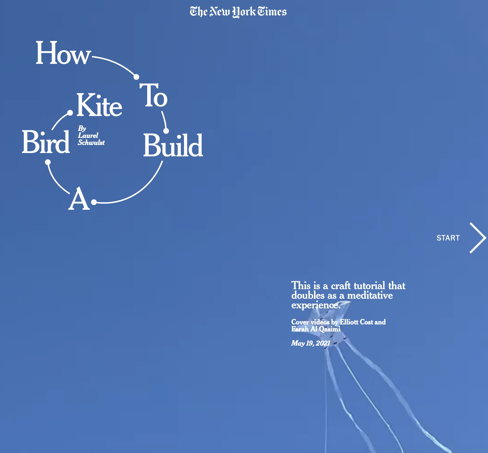

첫 번째 사이트
constantvzw.org
이 웹사이트는 포스터나 실생활에서 사용하는 물건들의 사진을 일기형식으로 소개한다. 웹사이트에 처음 들어갔을 때 가장 눈에 띄는 것은 특이한 폰트와 모양의 제목이다. 전체적으로 민트색인데 이 색이 넓고 굵직한, 그리고 잉크펜으로 직접 쓴 듯한 웹사이트의 폰트와 귀여운 느낌으로 아주 잘 어울린다. 앞서 말했듯 일기 형식이라 상단에 날짜를 넘겨볼 수 있다는 점이 특이하다. 날짜 밑의 제목을 누르면 선택한 글을 한 번에 볼 수 있다. 그리고 하단에 메뉴 바가 있어서 웹사이트의 다른 곳으로 이동하기 편하다. 첫 화면에 뜨는 글 말고도 여러 구역으로 나눠진 글들이 있어서 볼 게 많은 웹사이트이다.pc에서 봤을 때와 모바일에서 봤을 때 큰 차이가 없어서 화면이 작은 모바일에서는 스크롤을 많이 해야 하는 단점이 있어서 불편했다.
두 번째 사이트
the-documents.org
이 웹사이트는 일상을 담은 여러 사진들을 소개한다. 흰색 톤의 배경에 검정의 일반적인 폰트가 담담하지만 한 화면에서도 다른 폰트가 섞여 있고 글자의 배치들이 특이해서 재미있다. 가장 기억에 남는 것은 사진을 누르고 움직이면 방향에 따라서 사진이 확대할 수 있다. 오른쪽에 누르면 이동할 수 있는 표가 있는데 세로로 되어 있고 글씨가 작아서 읽기 조금 어려울 수 있다. 모바일과 pc에서의 차이점은 위에서 말한 오른쪽의 표가 모바일에서는 하단의 버튼을 누르면 뜬다는 것이다. 모바일에서 볼 때가 눈에 쉽게 들어와서 더 보기 편한 디자인이다.
세 번째 웹사이트
how-to-build-a-bird-kite
이 웹사이트는 제목 그대로 새 모양 연을 어떻게 만들었는지 제작 과정을 보여준다. 첫 화면에서는 디자인한 제목과 연이 날아다니는 동영상, 그리고 시작할 수 있는 버튼이 있다. 제목은 곡선으로 연결된 동그란 모양인데 이 곡선이 날아다니는 연을 표현한 것 같아 내용과 잘 어울린다. 전체적인 색은 파란색, 흰색인데 서로 잘 어울리고 글씨도 잘 보인다. 동영상을 재생하면 해설에 따라 자막이 달리는데 자막에 검은색 배경이 함께 떠서 읽기 쉽고 다른 배경에 묻히지 않아서 좋다. 모바일에서와의 차이는 오른쪽 아래 위치하던 자막의 위치가 중간으로 옮겨지고 화면이 약간 좁아진다.